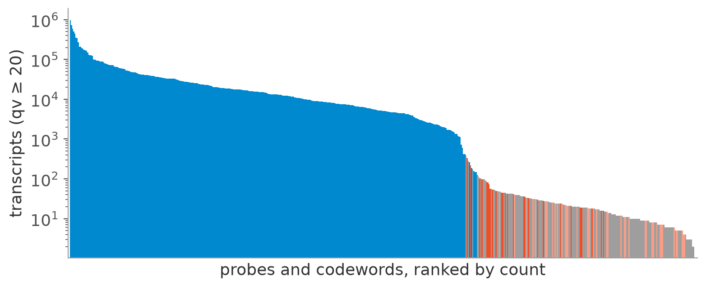

Every probe and codeword, ranked by how many molecules it produced (log scale)

gene probes (347)
negative control probes (27)
negative control codewords (40)
unassigned codewords (126)
5 genes are not above the brightest negative control probe (335 molecules): Tnf, Cd69, Lcn2, Slc6a3, Nme8. Their counts are indistinguishable from background here.
Negative control probe
a probe with no target RNA: non-specific binding
1,669 molecules
Negative control codeword
a codeword reserved as a control: decoding errors
675 molecules
Unassigned codeword
a codeword not used by any probe: decoding errors
3,732 molecules
All controls together: 6,076 vs 12.8 million gene molecules (≈ 0.05 %).
Control definitions after C. Avenel's lecture (10x Genomics metric definitions). Counts: transcripts.parquet, qv ≥ 20, Practical 2 dataset.